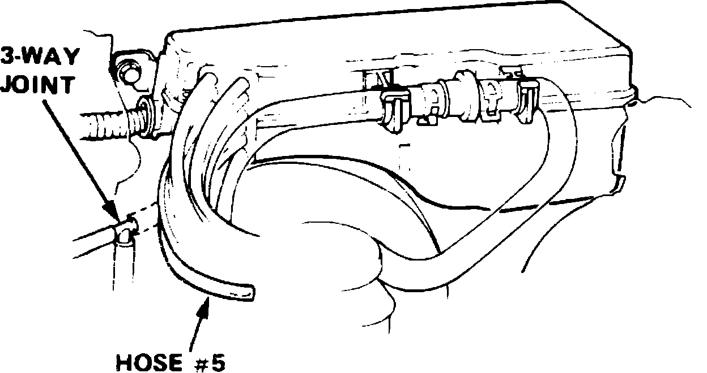
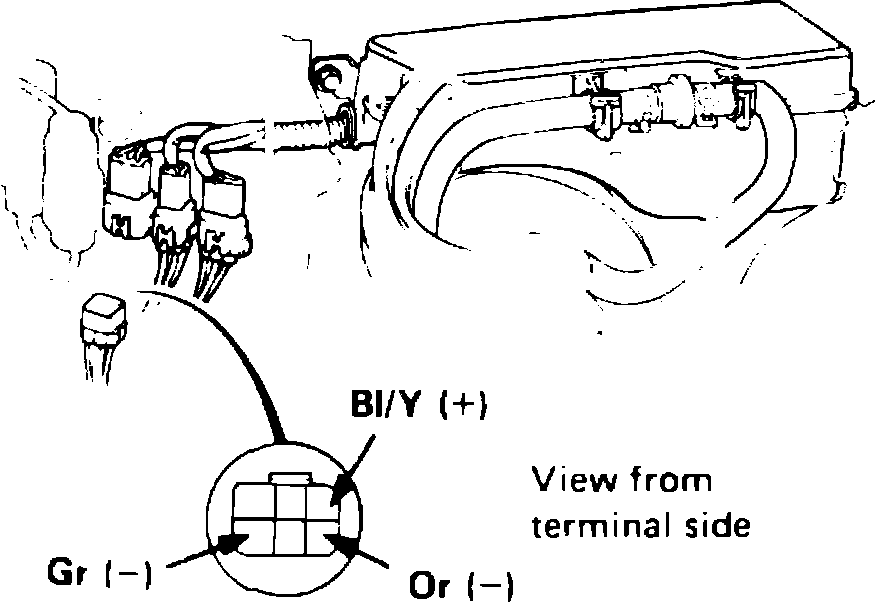

Vacuum Advance Control Solenoid: Testing and Inspection
Fig. 3 3-Way Joint And No. 5 Vacuum Hose Location:

Fig. 4 6 Pin Connector Terminal Identification.:

LEGEND
Solenoid Valve A
1. Start engine and allow to reach normal operating temperature (cooling fan cycling).
2. Disconnect No. 5 vacuum hose from 3-way joint connector, Fig. 3, and check for vacuum at joint. If no vacuum is present, check vacuum line for improper connections, cracks and blockage, and vacuum port or check valve for clogged condition. If vacuum is present, proceed to next step.
3. Disconnect 6 pin connector, then connect voltmeter positive probe to Bl/Y terminal and negative probe to Or terminal, Fig. 4.
4. If battery voltage is obtained in previous step, check condition of vacuum hose in control box. If hose is OK, replace solenoid valve and retest.
5. If no voltage is obtained in step 3, check voltage between Bl/Y terminal and body ground with ignition switch On. If no voltage is present, repair open in Bl/Y wire between solenoid valve and No. 11 fuse. If voltage is present, proceed to next step.
6. Check for open on Or wire between solenoid valve and ECU. If wire is damaged, repair and repeat test. If wire is OK, check the ECU as outlined in ``Fuel Injection.''
7. With engine idling at normal operating temperature, connect positive probe of voltmeter to Bl/Y terminal and negative lead to Or terminal, then crack open and release throttle and observe voltmeter. Voltage should momentarily drop to zero. If voltage drops to zero, replace solenoid valve and repeat test. If voltage is not as specified, check ECU as outlined in ``Fuel Injection.''
Solenoid Valve B
1. Start engine and allow to reach normal operating temperature (cooling fan cycling).
2. Disconnect No. 5 vacuum hose from 3-way joint connector, Fig. 3, and check for vacuum at joint. If no vacuum is present, check vacuum line for improper connections, cracks and blockage, and vacuum port or check valve for clogged condition. If vacuum is present, proceed to next step.
3. Disconnect 6 pin connector, then connect voltmeter positive probe to Bl/Y terminal and negative probe to Gr terminal, Fig. 4.
4. If battery voltage is obtained in previous step, check condition of vacuum hose in control box. If hose is OK, replace solenoid valve and retest.
5. If no voltage is obtained in step 3, check voltage between Bl/Y terminal and body ground with ignition switch On. If no voltage is present, repair open in Bl/Y wire between solenoid valve and No. 11 fuse. If voltage is present, proceed to next step.
6. Check for open on Gr wire between solenoid valve and ECU. If wire is damaged, repair and repeat test. If wire is OK, check the ECU as outlined in ``Fuel Injection.''
7. With engine idling at normal operating temperature, connect positive probe of voltmeter to Bl/Y terminal and negative lead to Gr terminal.
8. On automatic transmission equipped vehicles, crack open and release throttle and observe voltmeter. Voltage should momentarily drop to zero. If voltage drops to zero, replace solenoid valve and repeat test. If voltage is not as specified, check ECU as outlined in ``Fuel Injection.''
9. On manual transmission equipped vehicles, gradually raise engine speed to 3,500 RPM and observe voltmeter. Voltage should be zero. If voltage is zero, replace solenoid valve and repeat test. If voltage is present, check ECU as outlined in ``Fuel Injection.''